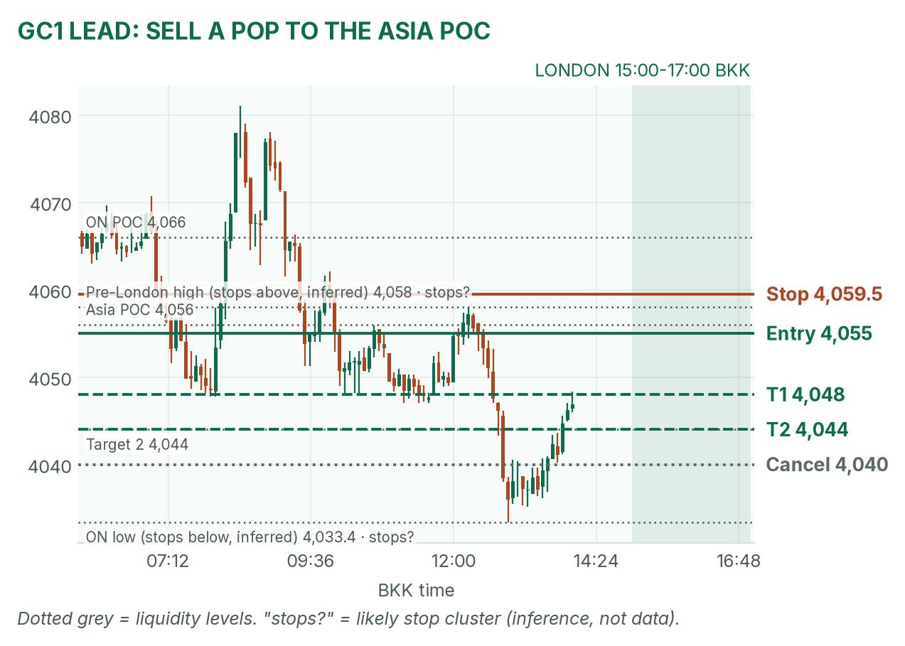
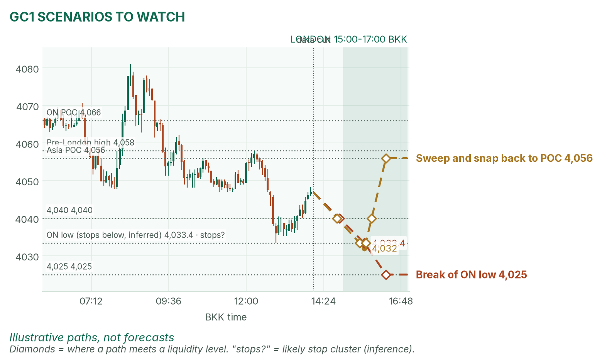
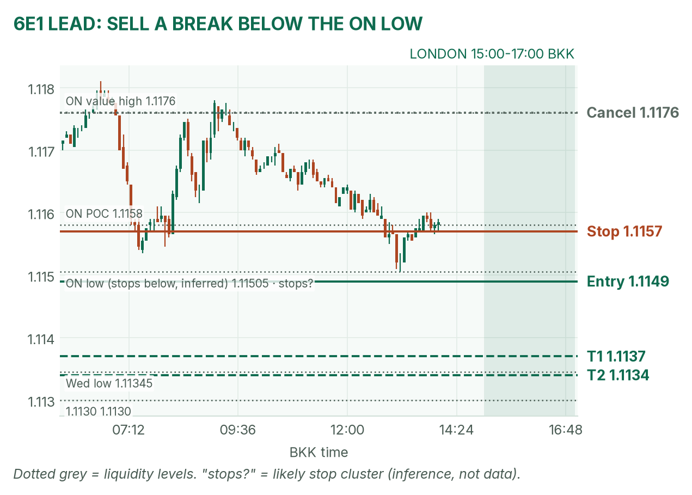
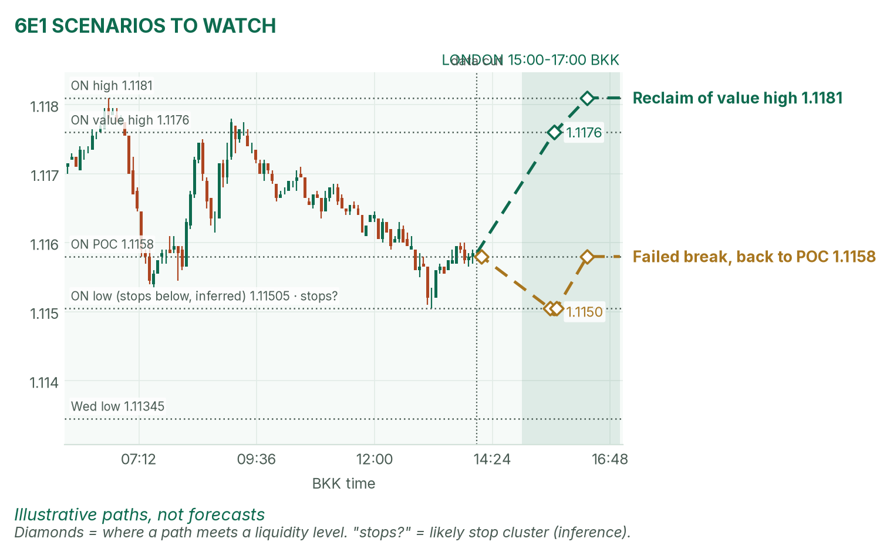

The Fed held, gold slid, and the big news waits until tonight.
Window 15:00–17:00 BKK (UK on winter time). Data cut 14:05 BKK: GC 4,046.9, 6E 1.11585 (TopstepX Z26, last complete 5m bar). Levels only. Ideas, not advice.
Summary
GC: sell a failed pop to 4,055, the Asia POC. Stop 4,059.5, target 4,048 (1.6R). About 38%.
6E: sell a break below the overnight low. Entry 1.1149, stop 1.1157, target 1.1137 (1.5R). About 35%.
Small European releases at 16:00, 16:30 and 17:00. US data and the ECB come after the window.
No April pre-London brief today, so no brief check. Flat by 17:00.
The market story
The Fed kept its rate at 3.75%–4.00% overnight, but two members voted for a hike and it made no promise about December. Remember this week's lesson: a rate is a price, and each central bank sets its own. A Fed that might raise its price keeps the dollar firm and the US 10-year yield near 5.0% (5.005% at 12:47, CNBC). Gold pays no interest, so it fell from 4,081 to 4,033.4 at 12:55, then bounced to 4,047.
The euro drifted from 1.1181 to 1.11505. The ECB sets the euro's own rate at 20:15 tonight and is expected to hold its deposit rate at 2.50%. US growth and inflation (GDP and PCE, the Fed's favourite inflation gauge) land at 19:30. Big news after the window usually means a quiet London morning.
How I read it: both lean down, but expect a tight range. Sell gold's bounces into the POC; sell the euro only if it breaks.
News (BKK)
Time
Event
Forecast
Prior
Read
16:00
Italy unemployment (Sep)
6.2%
6.2%
Minor. Higher is cold for the euro.
16:30
UK mortgage approvals
56,000
54,900
Minor for GC and 6E.
17:00
Euro-area economic sentiment
98.0
97.9
At the close. Hot helps the euro.
19:30
US GDP Q3 / core PCE (month)
3.0% / 0.3%
2.2% / 0.2%
After the window. Hot PCE is cold for gold and the euro.
20:15
ECB decision
Deposit rate hold, 2.50%
2.50%
After the window.
No-trade zones: 15:55–16:02 and 16:25–16:32. Be flat by 16:55.
Levels to watch
Level
GC
6E
Overnight high / low
4,081.7 / 4,033.4
1.1181 / 1.11505
Overnight value area (where 70% of trading happened)
4,036–4,075
1.1155–1.1176
Overnight POC (busiest price)
4,066
1.1158
Asia POC (07:00–14:05)
4,056
1.1158
Pre-London high (12:05–14:05)
4,058
1.11635
Wednesday high / low
4,097.2 / 4,036.9
1.1191 / 1.11345
Typical window range (median / 80th pct, 14 days)
15.5 / 20 pts
17 / 24 pips
Gold (GC1)
Bias: down, with a firm dollar and 5% yields. My London gold rule fades the edges of the 15:00–15:30 range back toward the POC. Price sits under the Asia POC, so I sell a bounce into it.
The trade: fade a pop to the Asia POC
Entry
4,054–4,056 (plan 4,055): after 15:30, a push into 4,056 that closes back below it on a 5m bar
Stop
4,059.5: above the 4,058 pre-London high, where buyers' stops likely sit (inferred)
Price trades 4,040 before entry, or no fill by 16:15
Probability
~38%, an estimate. Basis: a 1.6R target wins about 38% of the time if price were random; London gold range edges mostly snapped back to the POC in my study. 7 points is under half a typical window.
Why: it sells with the trend at this morning's busiest price. April's brief: none today. If gold breaks 4,033.4 first, don't sell the hole; let it go.

GC 5-minute bars to 14:05 BKK, window shaded. The post-Fed slide bounced off 4,033.

Illustrative paths, not forecasts: a break of the overnight low, and a sweep that snaps back to the POC.
Scenarios to watch
Bearish break: a 15m close below 4,033.4 runs the stops there. Aims for 4,025.
Sweep and snap back: a poke to about 4,032 that closes back above 4,033.4. Aims for 4,056, the Asia POC.
Euro (6E1)
Bias: down, under its overnight value area. My London rule for 6E is to trade breaks of the 15:00–15:30 range.
The trade: bearish range breakout
Entry
1.1148–1.1150 (plan 1.1149), on a 5m close below the 15:00–15:30 range low and 1.11505
Stop
1.1157: back near the 1.1158 POC, so the break failed
Targets
1R partial 1.1141 · full target 1.1137 (1.5R) · stretch 1.1134, near Wednesday's low (1.9R)
Cancel
Price trades 1.1176 before entry, or no fill by 16:30
Probability
~35%, an estimate. Basis: euro London breakouts averaged +0.31R in my study (26 sessions, not significant); 12 pips is about 70% of a typical window.
Why: it trades with the firm dollar. April's brief: none today. If it breaks and closes back above 1.11505 within 15 minutes, get out.

6E 5-minute bars to 14:05 BKK. A slow fade from 1.1181 to 1.11505.

Illustrative paths, not forecasts: a reclaim of the value-area high, and a failed breakdown.
Scenarios to watch
Bullish reclaim: a 15m close above 1.1176. Aims for 1.1181, the overnight high.
Failed break: a poke under 1.11505 that closes back above it. Aims for 1.1158, the POC.
NQ (not traded in London): 29,646.5, below Wednesday's 30,178 high.
Before you click
ORB bases. GC London: 15:00–15:30 range, fade to POC. 6E London: 15:00–15:30 range, trade breakouts.
Checklist. 1) Room to today's max loss? 2) Within daily rules? 3) No release within 30 minutes? 4) Agrees with the bias? 5) At a marked level? 6) Setup tagged? 7) Entry, stop, 1R partial, target set? 8) Calm, not chasing?
Reset (60 seconds). Breathe in 4, hold 4, out 6, five times. Name the feeling in one word. Say the plan aloud. "Eager" or "frustrated"? Wait 5 minutes.
TopstepX Z26 bars, read-only; overnight starts 05:00 BKK. Fed result: ATFX and wire reports. Calendar: UniCredit, svmuu. Yields: CNBC. No April pre-London brief was published today.